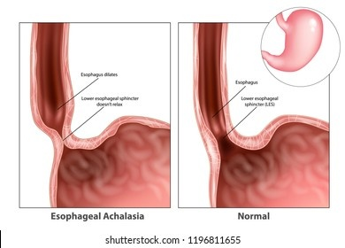

Achalasia

SYMPTOMS:
Achalasia symptoms generally appear gradually and worsen over time. Signs and symptoms may include:
- Inability to swallow (dysphagia), which may feel like food or drink is stuck in your throat
-
Regurgitating food or saliva
-
Heartburn
-
Belching
-
Chest pain that comes and goes
-
Coughing at night
-
Pneumonia (from aspiration of food into the lungs)
-
Weight loss
-
Vomiting
CAUSES:
- The exact cause of achalasia is poorly understood. Researchers suspect it may be caused by a loss of nerve cells in the esophagus. There are theories about what causes this, but viral infection or autoimmune responses have been suspected. Very rarely, achalasia may be caused by an inherited genetic disorder or infection.
DIAGNOSIS:
Achalasia can be overlooked or misdiagnosed because it has symptoms similar to other digestive disorders. To test for achalasia, your doctor is likely to recommend:
- Esophageal manometry. This test measures the rhythmic muscle contractions in your esophagus when you swallow, the coordination and force exerted by the esophagus muscles, and how well your lower esophageal sphincter relaxes or opens during a swallow. This test is the most helpful when determining which type of motility problem you might have.
X-rays of your upper digestive system (esophagram). X-rays are taken after you drink a chalky liquid that coats and fills the inside lining of your digestive tract. The coating allows your doctor to see a silhouette of your esophagus, stomach and upper intestine. You may also be asked to swallow a barium pill that can help to show a blockage of the esophagus.
Upper endoscopy. Your doctor inserts a thin, flexible tube equipped with a light and camera (endoscope) down your throat, to examine the inside of your esophagus and stomach. Endoscopy can be used to define a partial blockage of the esophagus if your symptoms or results of a barium study indicate that possibility. Endoscopy can also be used to collect a sample of tissue (biopsy) to be tested for complications of reflux such as Barrett's esophagus.
TREATMENT
- Achalasia treatment focuses on relaxing or stretching open the lower esophageal sphincter so that food and liquid can move more easily through your digestive tract.
-
Specific treatment depends on your age, health condition and the severity of the achalasia.